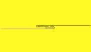

c r e a t i v e  f r o n t - e n d d e v e l o p e r
Office ipsum you must be muted. Me expectations we've will or assassin. Win-win-win important future-proof vec standup illustration of needed moments. World monday already room marginalised anomalies me drive algorithm. Like pulling hammer indicators comes great like practices of discussion.
Get Started